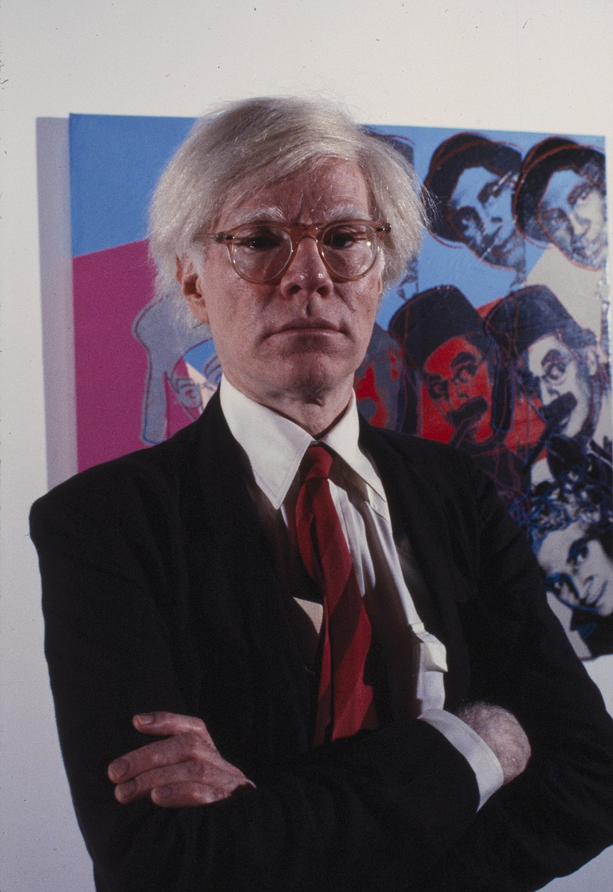
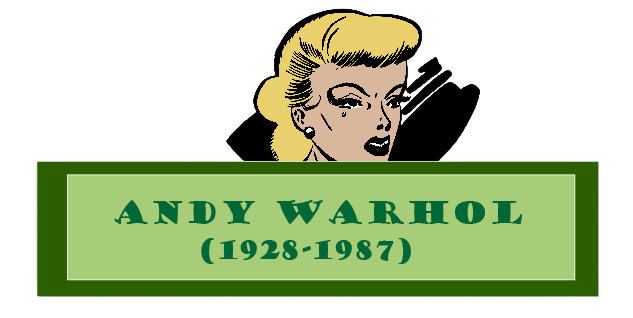
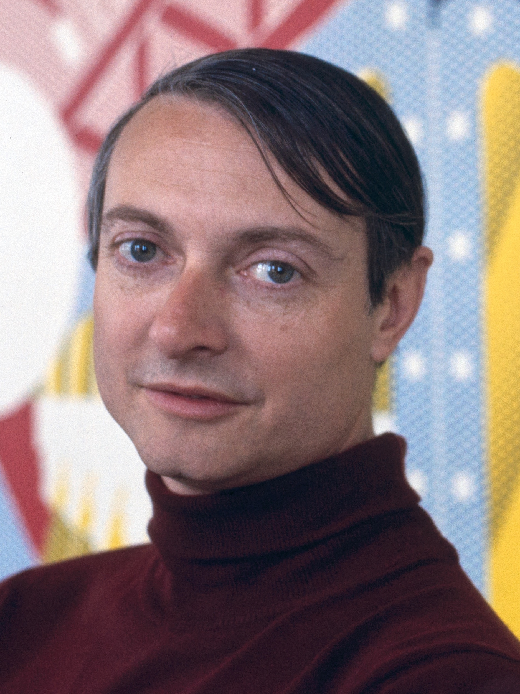
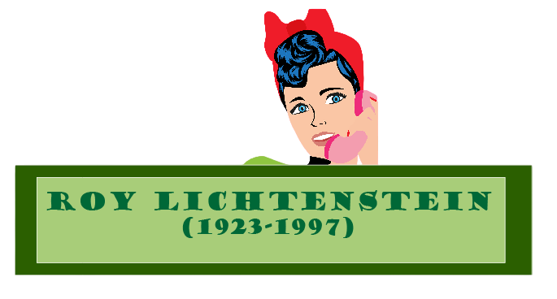
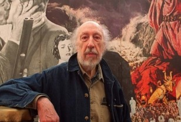
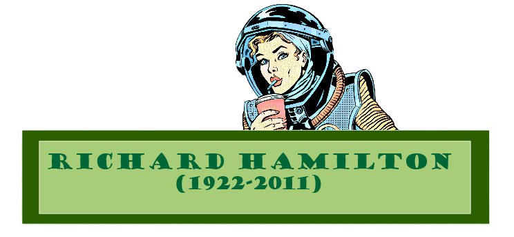

Andy Warhol fue uno de los artistas más influyentes del siglo XX y el principal referente del movimiento del Pop Art. Nació el 6 de agosto de 1928 en Pittsburgh, Estados Unidos, con el nombre Andrew Warhola, en el seno de una familia de inmigrantes eslovacos.
Desde joven mostró interés por el arte y estudió diseño gráfico en el Carnegie Institute of Technology. En la década de 1950 se trasladó a Nueva York, donde comenzó a trabajar como ilustrador comercial para revistas y publicidad, ganando reconocimiento por su estilo innovador.
A comienzos de los años 60 dio el salto al arte contemporáneo y se convirtió en una figura clave del Pop Art, un movimiento que tomaba elementos de la cultura popular y el consumo masivo. Sus obras más famosas incluyen las latas de sopa Campbell y retratos de celebridades como Marilyn Monroe, realizados con técnicas de serigrafía que permitían reproducir imágenes en serie.
Warhol fundó su estudio, conocido como The Factory, que se convirtió en un punto de encuentro para artistas, músicos y figuras del ambiente cultural neoyorquino. Allí también incursionó en el cine experimental y produjo bandas musicales como The Velvet Underground.
Su vida estuvo marcada por la fama, la controversia y un intento de asesinato en 1968 que casi le cuesta la vida. A lo largo de su carrera, Warhol desafió las fronteras entre el arte y el comercio, convirtiéndose en un ícono cultural.
Falleció el 22 de febrero de 1987 en Nueva York, dejando un legado que sigue influyendo en el arte, la moda y la cultura visual contemporánea.


Roy Lichtenstein fue uno de los artistas más importantes del siglo XX y una figura clave del movimiento del Pop Art. Nació el 27 de octubre de 1923 en Nueva York, Estados Unidos.
Comenzó su carrera artística influenciado por el expresionismo abstracto, pero en la década de 1960 alcanzó la fama al desarrollar un estilo propio inspirado en los cómics y la cultura popular. Sus obras reproducían viñetas ampliadas con colores planos, contornos marcados y el uso característico de puntos Ben-Day, imitando la impresión industrial.
Entre sus trabajos más conocidos se encuentran pinturas como “Whaam!” y “Drowning Girl”, que reinterpretan escenas dramáticas del cómic con un enfoque artístico y crítico sobre la cultura de masas.
A lo largo de su carrera, Lichtenstein exploró distintos estilos y temas, siempre manteniendo su identidad visual. Falleció el 29 de septiembre de 1997, dejando un legado fundamental en el arte contemporáneo.
Murió en 1997, dejando una fuerte influencia en el arte contemporáneo y el diseño gráfico.


Richard Hamilton fue un artista británico nacido en 1922 en Londres y una de las figuras fundamentales en el origen del Pop Art, especialmente en su desarrollo en Europa.
Estudió en la Royal Academy of Arts y en sus primeros años trabajó dentro de corrientes más tradicionales, pero pronto empezó a interesarse por la relación entre el arte y la sociedad de consumo. Durante la década de 1950, su obra comenzó a incorporar imágenes de publicidad, electrodomésticos, revistas y la cultura mediática emergente.
En 1956 creó su collage más famoso, “Just what is it that makes today’s homes so different, so appealing?”, una obra considerada clave para el nacimiento del Pop Art. En ella combinó imágenes de revistas para representar de forma irónica y crítica la vida moderna, el consumo y los estereotipos de la cultura popular.
A lo largo de su carrera, Hamilton exploró el uso del collage, la fotografía y más tarde también medios digitales, siempre analizando cómo los medios de comunicación y la tecnología influyen en la percepción de la realidad. Su trabajo tuvo gran impacto en el arte contemporáneo y en la forma de entender la cultura visual del siglo XX.
Falleció en 2011, dejando un legado decisivo como uno de los “padres” del Pop Art.